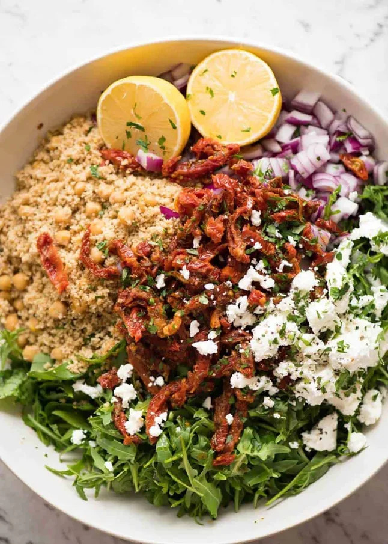

Couscous Salad with Sun Dried Tomato and Feta
Description
This is a 12 minute meal. It' also a no cook meal. Which means no matter how hot, how tired and how hangry you are (no typo there), or even if you've been cooking non stop all day since 7 am, up to your elbows in batter and pasta sauce, you can still muster up the energy for a seriously tasty bowl of deliciousness that requires minimal effort.

Ingredients
- 1 1/4 cups dried couscous (Note 1)
- 1 1/4 cups / 315 ml boiled water
- 1 tsp vegetable stock powder (or 1 cube crumbled) (Note 2)
- 1 garlic clove , minced
- 1 tsp coriander powder (or cumin - I interchange)
- 400 g / 14 oz chickpeas (1 can) , drained
- 1/2 cup coriander , finely chopped
- 1/2 cup parsley , finely chopped (or mint)
- 1 red onion , chopped
- 220 g / 7 oz jar sun dried tomato strips in OIL (Note 3)
- 120 g / 4 oz rocket / arugula lettuce , chopped into 5 cm / 2″ pieces
- Zest of 1 large lemon
- 5 tbsp fresh lemon juice (2 large lemons)
- 1/2 tsp coarsely ground black pepper
- 60 g / 2 oz feta , crumbled
- Salt and pepper
Steps
- Couscous are tiny grains the size of cracked pepper. They are made from wheat it's essential teeny pasta. Because it's so small, you just need to soak it. You can substitute with quinoa, barley or other grains - cook as required for those grains.
- Using stock powder or a crumbled bouillon cube goes a long way to add flavour to your couscous. Stock powder is basically bouillon cubes in powder form. 1 tsp = 1 cube. I like to use vegetable but chicken is also great. I use Vegeta. (PS Great to have on hand - of recipe calls for broth, just dissolve in hot water, 1 - 1 1/2 tsp per cup. Much more economical than buying liquid broth).
- This recipe uses the oil in the sun dried tomato jar as the dressing. If you only have the sun dried tomatoes without oil, just drizzle olive oil over the salad - I think you'll need about 1/3 cup (80ml), maybe a bit more. There's far less than this in a jar of sun dried tomatoes but because the tomatoes themselves are soaked in the oil, it feels like there's more!
- 12 MINUTE COUSCOUS SALAD goes down like this: Get the couscous soaking, then start on the chopping. Because there's no separate dressing to make and assuming reasonable chopping skills, I bet you can get this on the table in 12 minutes!
- STORAGE / MAKE AHEAD: Even dressed, this keeps well for 2 days or so because it's not leafy or weighed down with an oily dressing. To make ahead fresh, just place all the ingredients in a bowl except the sun dried tomato and lemon juice. Then add them just before serving and toss!
Enjoy your delicious couscous salad! - Nihar Rai